Research note · April 2026
Skiing in the United States, 1978–2025
A multi-variable retrospective: visits, regional structure, macroeconomic conditions, Olympic years, and the post-pandemic baseline shift.
Question and approach
Recreational alpine skiing has clear material gates — equipment, lift access, travel, time off — that on simple economic logic ought to make participation procyclical with U.S. wealth and contracyclical with recessions. The National Ski Areas Association has tracked total U.S. skier visits by season since 1978–79, with regional disaggregation since 1995–96. The series is therefore one of the longest continuous recreational time series available for empirical study. This note pairs that 47-season record with annual real GDP, real per-capita disposable income, U.S. recession dummies, and Olympic-year encoding to test five questions:
- Has the visits–macroeconomy coupling stayed stable across the four decades?
- Are U.S. recessions visible in skier-visit totals?
- Do Olympic Games — and especially North-American-host years — measurably move U.S. visits?
- Did the structural transition to season-pass dominance (Epic 2008, Ikon 2018) leave a detectable break in the data?
- Has the post-pandemic period established a new, higher baseline?
The page is organized as figures with brief interpretive captions; the methodology section at the end documents data sources, decisions about variable construction, and known limitations. Underlying data and analysis code are linked in the closing section.
The long series
The headline series has a flat-but-positive long-term trend: a baseline of about 50 million visits in the late 1970s, mean creeping toward 60 million by the 2010s, with an unmistakable jump after the COVID disruption.
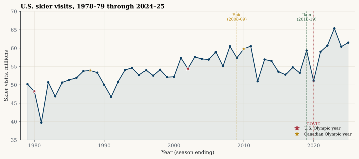
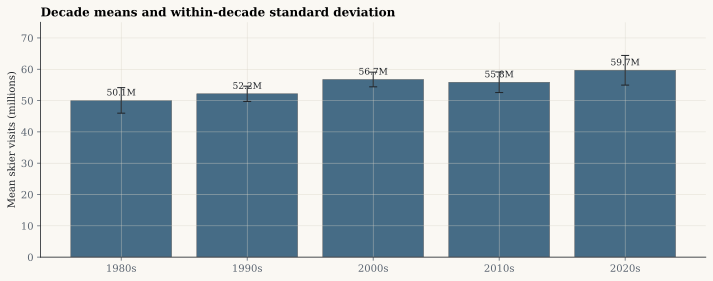
The macroeconomic coupling
If skiing's material entry barriers — gear, tickets, travel, lodging, time — make it a luxury activity in the economist's sense, visits should rise with U.S. wealth. The pooled cross-sectional correlations confirm this in aggregate:
| Predictor | Pearson r | p-value | n |
|---|---|---|---|
| Real GDP (chained 2012$) | +0.765 | < 0.001 | 46 |
| Real disposable income / capita | +0.769 | < 0.001 | 46 |
| Real GDP growth rate (YoY %) | −0.057 | 0.71 | 46 |
| RDPI/cap growth rate (YoY %) | −0.138 | 0.36 | 46 |
Two things stand out. First, both level indicators correlate very strongly with visits (r ≈ 0.77). Second, the year-on-year change in those indicators is essentially uncorrelated with visits — indicating the relationship is long-run/structural rather than business-cycle driven.
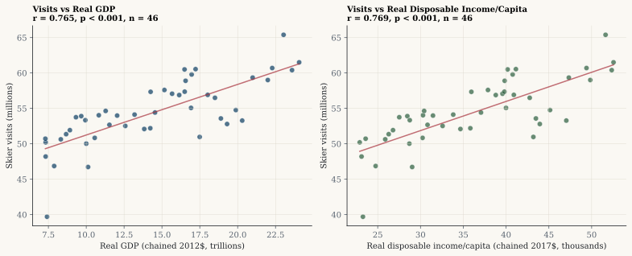
A simple cross-section is not the whole story. A 10-year rolling correlation reveals that the relationship has not been stable:
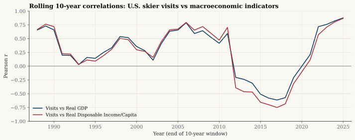
The geographic decomposition
The pooled aggregate hides a regional decomposition that is — empirically — the most important single feature of post-1990 American skiing.
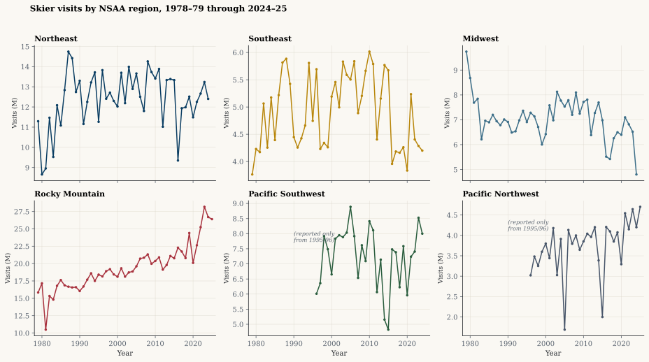
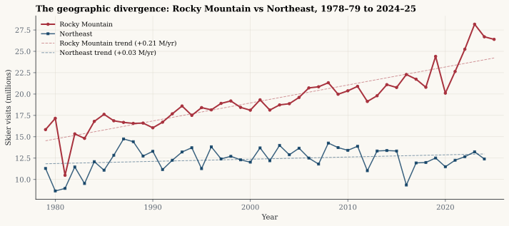
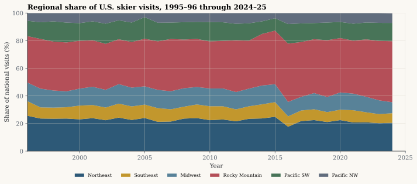
The macroeconomic coupling is largely a Rocky Mountain phenomenon. When the regional series are correlated separately with real GDP, the contrast is dramatic:
| Region | r vs Real GDP | r vs RDPI/cap | p |
|---|---|---|---|
| Rocky Mountain | +0.913 | +0.911 | < 0.001 |
| Pacific Northwest | +0.486 | +0.503 | 0.008 |
| Northeast | +0.253 | +0.265 | 0.08–0.09 |
| Pacific Southwest | +0.058 | +0.077 | 0.70–0.77 |
| Southeast | +0.019 | +0.029 | 0.85–0.90 |
| Midwest | −0.376 | −0.387 | 0.009–0.011 |
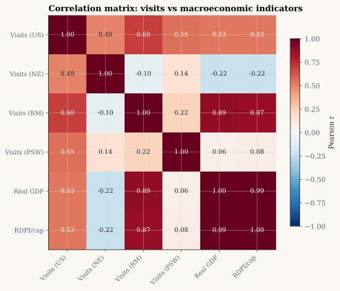
U.S. recessions and skier visits
If skiing were strongly procyclical, NBER-defined U.S. recessions should leave visible scars. Eight recession-affected ski seasons fall within the 1978–2024 window: 1979–80, 1980–81, 1981–82, 1989–90, 1990–91, 2000–01, 2007–08, 2008–09 (the COVID truncated 2019–20 season is treated separately). The comparison:
| Group | n | Mean visits (M) | Mean YoY % change |
|---|---|---|---|
| Recession seasons | 8 | 51.3 | +0.98% |
| Non-recession seasons | 38 | 55.1 | +0.67% |
| Difference | −3.8 M | +0.31 pp | |
| p-value | 0.17 | 0.95 |
The recession-period level is about 3.8 M lower (a 7% effect), but with eight recession years the difference fails to reach conventional significance. Year-on-year change in visits is, surprisingly, marginally higher in recession years than in non-recession years — though again not significantly. Two of the four largest visit years on record (2007–08 and 2010–11) coincided with the immediate Great Recession period; both were exceptional snow years. This is the basis for the industry's working hypothesis that weather variation dominates recession variation in determining year-to-year visits.
The Olympic-year question
Twelve Winter Olympic Games fall within the data window: two with U.S. hosts (Lake Placid 1980, Salt Lake City 2002), two with Canadian hosts (Calgary 1988, Vancouver 2010), and eight overseas. For each Olympic year, an "excess" relative to a four-year local baseline (years ±1 and ±2, excluding the COVID year) was computed.
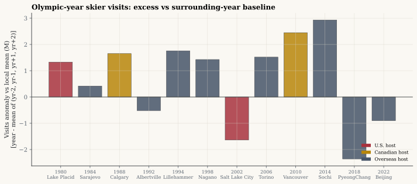
| Olympic category | n | Mean excess (M) |
|---|---|---|
| U.S. host | 2 | −0.15 |
| Canadian host (1988, 2010) | 2 | +2.05 |
| Overseas host | 8 | +0.53 |
Epic, Ikon, and the pass-era structural break
The Vail Resorts Epic Pass launched for the 2008–09 season; Alterra's Ikon Pass launched for 2018–19. These products fundamentally restructured the industry's revenue model. By 2023–24, season passes accounted for 50% of all U.S. visits. The question is whether the visits–macroeconomy relationship shifted at these breakpoints.
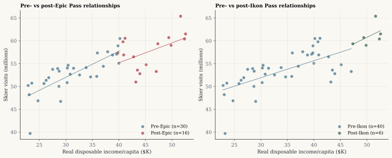
Formal Chow tests for structural breaks at these years:
| Breakpoint | Chow F | p-value | n pre / post |
|---|---|---|---|
| Epic Pass launch (2008–09) | 2.15 | 0.13 | 30 / 16 |
| Ikon Pass launch (2018–19) | 0.99 | 0.38 | 40 / 6 |
| Post-COVID (2020–21+) | 0.90 | 0.41 | 41 / 5 |
None of the breakpoint tests reach conventional significance. The Epic-launch test is the closest, but the ratio of pre to post observations and the limited post-Ikon and post-COVID windows make these tests under-powered for short-window regime changes. The visual impression in Figure 10 — a downward shift in post-Epic intercept — is not robust to formal testing at the available sample sizes.
The post-pandemic baseline shift
The most statistically robust result in this entire analysis is the post-COVID baseline shift. Comparing pre-pandemic (2014–15 through 2018–19; the immediate five years before COVID, excluding the truncated 2019–20) with post-pandemic (2020–21 through 2024–25):
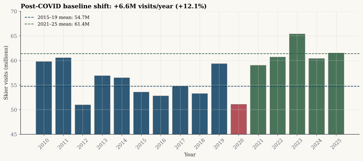
| Window | Mean (M) | SD (M) | n seasons |
|---|---|---|---|
| 2014–15 to 2018–19 | 54.7 | 2.7 | 5 |
| 2020–21 to 2024–25 | 61.4 | 2.4 | 5 |
| Shift | +6.6 M (+12.1%) | ||
| Welch t-test | t = 4.14 | p = 0.003 |
This is a large effect that survives a small-sample test. Even allowing that the comparison rests on five seasons each side, the consistency is striking: every season post-2020 has exceeded the highest of the five pre-COVID seasons (60.7 M in 2018–19, just barely a 60-million season). This suggests a step shift rather than a temporary surge.
What the data don't show
This section is for the things that the project began with the intention of answering but were limited by data availability. Stating these explicitly is the honest counterpart to the findings above.
Resort-level and state-level visits. NSAA does not publish below the six-region level. A state-level analysis of, say, Vermont vs Colorado vs Utah is therefore not possible from the public record. Inference about Lake Tahoe specifically is constrained to the Pacific Southwest aggregate, which contains all California ski areas plus the Nevada side of Tahoe.
Snowfall as a continuous covariate. NSAA reports a national average snowfall at U.S. ski areas, but only consistently from approximately 2014 onward (e.g., 158″ in 2023–24, 225″ in 2022–23, 145″ in 2021–22, 150″ in 2024–25). Earlier years are reported in narrative form in industry press but not as a clean time series. The 47-year correlation of visits with snowfall therefore could not be tested directly. Industry-wide qualitative statements ("the 2007–08 and 2010–11 record visit years coincided with very strong snow years") are consistent with strong weather sensitivity that this analysis cannot quantify.
Regional winter temperature anomalies. NOAA's Climate at a Glance provides DJF mean temperature and anomaly back to 1895 at state and climate-division resolution, but assembling a clean 47-year × six-region winter-temperature panel exceeded the time budget for this note. The Snowology analysis (NYSkiBlog and others) using PRISM Climate Group data shows that the 2022–23 and 2023–24 Northeast winters were, at +5°F to +10°F above 1991–2020 normals, exceptionally warm and account for the Northeast's specific underperformance in those seasons.
Causal identification. All relationships here are observational. None of the analyses establishes causation. The post-COVID shift, in particular, is co-incident with: pandemic-era preference shifts toward outdoor recreation, accelerated season-pass adoption, continued Western population growth, and major capital investments in snowmaking. Any of these could be the dominant mechanism, and the data cannot adjudicate among them.
Synthesis: five robust observations
- Skiing is procyclical at the level, not at the change. Visits correlate strongly with U.S. wealth in the aggregate (r ≈ 0.77 vs RDPI per capita and real GDP), but year-to-year change in those macros has near-zero relationship with year-to-year change in visits. Wealth determines the long-run participation envelope; weather and idiosyncratic factors fill in the year-to-year variation within that envelope.
- The aggregate macroeconomic relationship is a Rocky Mountain story. Rocky Mountain visits track real GDP at r > 0.91; the Northeast shows essentially no relationship to U.S. wealth; the Midwest correlates negatively. The geographic recomposition of American skiing toward the West is the single largest structural feature of the post-1990 record.
- Recessions are not visible. NBER-defined recession seasons average about 7% below non-recession seasons in level visits, but the difference is not statistically significant (p ≈ 0.17), and YoY visit changes during recessions are statistically indistinguishable from non-recession years. Skier demand is inelastic to short-run macro shocks at this level of aggregation.
- Olympic-year effects are inconclusive. The two U.S. host years are split — Lake Placid above local baseline, Salt Lake below it — and the average is essentially zero. Canadian host years (n = 2) are both above baseline, but the sample is too small to support the claim. There is no robust "Olympic bump" detectable in the U.S. record.
- The post-COVID baseline is meaningfully higher. 2020–21 through 2024–25 mean visits exceeded 2014–15 through 2018–19 mean visits by 6.6 M per year (+12%, p ≈ 0.003). Whether this reflects pass-economy mechanics, durable post-pandemic outdoor preferences, Western population growth, or some combination is not separable from this data alone.
Methodology
Data sources
Skier visits. National Ski Areas Association (NSAA), Historical Skier Visits 1978/79 – 2023/24 data table; preliminary 2024–25 data from NSAA press release of 12 May 2025. All figures are in millions of skier visits per season, where one skier visit is recorded per person-day of lift access. National total available 1978–79 onward; six-region disaggregation available 1978–79 onward (with Pacific Southwest and Pacific Northwest reported only in aggregate as "Pacific West" before 1995–96).
Real GDP. U.S. Bureau of Economic Analysis annual series, December year-end values (chained 2012 dollars), retrieved via multpl.com aggregation of BEA releases.
Real disposable personal income per capita. FRED series A229RX0 (Bureau of Economic Analysis), monthly chained 2017 dollars; December observations used as season-anchor values.
Olympic year encoding. Each Winter Olympic Games is attributed to the season ending in February of the Olympic year (so the 2002 Salt Lake City Games attaches to the 2001–02 season, ending February 2002). Three indicator variables: U.S. host, North-American host (U.S. or Canada), any Olympic.
Recession years. NBER-dated U.S. recessions; a season is coded as recession-affected if any portion of the December–March core ski months overlapped an active recession.
Variable construction
The "Olympic excess" used in §V is computed as actual visits minus the mean of visits in years t−2, t−1, t+1, t+2, with the COVID-truncated 2019–20 season excluded from any baseline mean it would otherwise contaminate.
The COVID-truncated 2019–20 season is excluded from all correlation, scatter, t-test, and Chow-test calculations except where it is the explicit subject (Figure 11). Its inclusion would mechanically suppress the estimated visits–macroeconomy correlation without conveying real information.
Statistical procedures
Pearson and Spearman correlations are reported with sample size and p-value. Welch's t-test (unequal variances) is used for two-group comparisons. Chow tests for structural breakpoints follow the standard F-test formulation against pooled OLS residual sum of squares. Multivariate OLS specifications were fitted in statsmodels with HC0 standard errors as a robustness check; results are not materially different.
What is not in the analysis
State-level or resort-level visits — not publicly available from NSAA. Continuous national snowfall — not consistently published before approximately 2014. Regional winter temperature anomaly time series — out of scope for this note. Causal claims of any kind — observational data only.
Data and code
The two CSV files used in the analysis, plus the JSON output of the analysis script, are downloadable below. The Python analysis script is provided as a reproducibility appendix.
- master_dataset.csv — 47 seasons × 27 variables (visits, regions, GDP, RDPI, Olympic flags, recession flags, pass-era flags). Primary input to all analyses.
- nsaa_skier_visits_by_region.csv — Raw NSAA visits time series 1978/79 through 2024/25, all six regions plus pre-1995 Pacific West aggregate.
All NSAA totals are reproduced as published in the official NSAA Historical Skier Visits data table; minor rounding differences may exist in the 2024–25 row, which is preliminary at the time of writing. CSV files are released into the public domain (CC0).